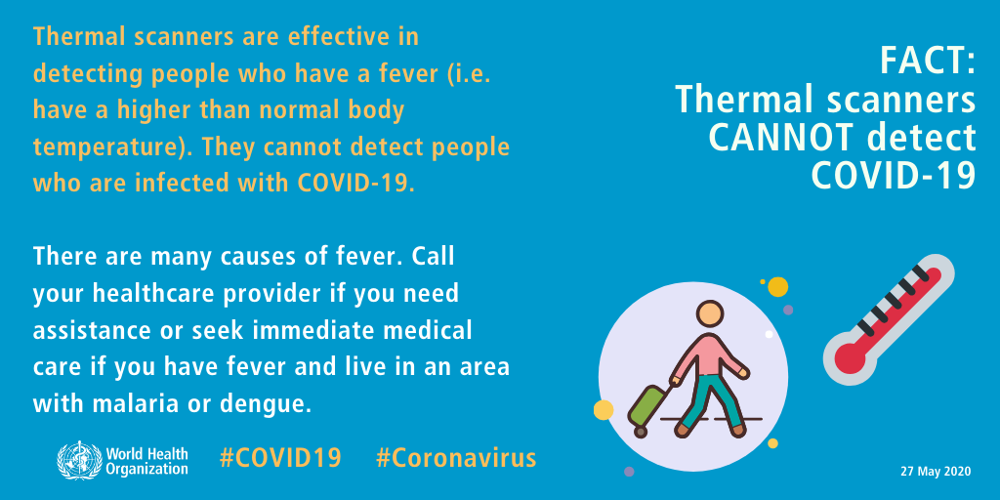
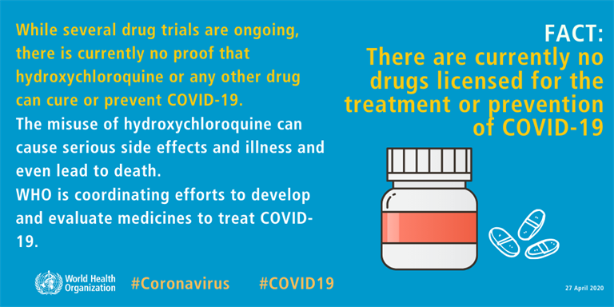

FACT: The likelihood of shoes spreading COVID-19 is very low
The likelihood of COVID-19 being spread on shoes and infecting individuals is very low. As a
precautionary measure, particularly in homes where infants and small children crawl or play on floors,
consider leaving your shoes at the entrance of your home. This will help prevent contact with dirt or
any waste that could be carried on the soles of shoes.
FACT:Thermal scanners CANNOT detect COVID-19
Thermal scanners are effective in detecting people who have a fever (i.e. have a higher than normal body
temperature). They cannot detect people who are infected with COVID-19. There are many causes of fever.
Call your healthcare provider if you need assistance or seek immediate medical care if you have fever
and live in an area with malaria or dengue.

FACT: Most people who get COVID-19 recover from it
Most people who get COVID-19 have mild or moderate symptoms and can recover thanks to supportive care.
If you have a cough, fever and difficulty breathing seek medical care early - call your health facility
by telephone first. If you have fever and live in an area with malaria or dengue seek medical care
immediately.
FACT: People should NOT wear masks while exercising
People should NOT wear masks when exercising, as masks may reduce the ability to breathe comfortably.
Sweat can make the mask become wet more quickly which makes it difficult to breathe and promotes the
growth of microorganisms. The important preventive measure during exercise is to maintain physical
distance of at least one meter from other
FACT: Spraying and introducing bleach or another disinfectant into your body WILL NOT protect you
against COVID-19 and can be dangerous
Do not under any circumstance spray or introduce bleach or any other disinfectant into your body. These
substances can be poisonous if ingested and cause irritation and damage to your skin and eyes.
Bleach and disinfectant should be used carefully to disinfect surfaces only. Remember to keep chlorine
(bleach) and other disinfectants out of reach of children.

FACT: There are currently no drugs licensed for the treatment or prevention of COVID-19
While several drug trials are ongoing, there is currently no proof that hydroxychloroquine or any other
drug can cure or prevent COVID-19. The misuse of hydroxychloroquine can cause serious side effects and
illness and even lead to death. WHO is coordinating efforts to develop and evaluate medicines to treat
COVID-19